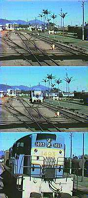

|
 |
The
next time Travis ran away from home, he jumped a train heading for Alice Springs. On his second day there he saw a flyer in the window of Canvas, Caravans and Cameras, "International Film Production. P.A.'s wanted, no experience required." Travis wasn't even sure what a P.A. was, but after lying about his age (which he bumped up three years) he was hired without further questions. The film was about a brother and sister who get lost in the outback and are rescued by an aborigine. Travis enjoyed the work and the lifestyle, but was almost fired when he tripped over a cable and brought a light crashing down onto the sound recordist. |